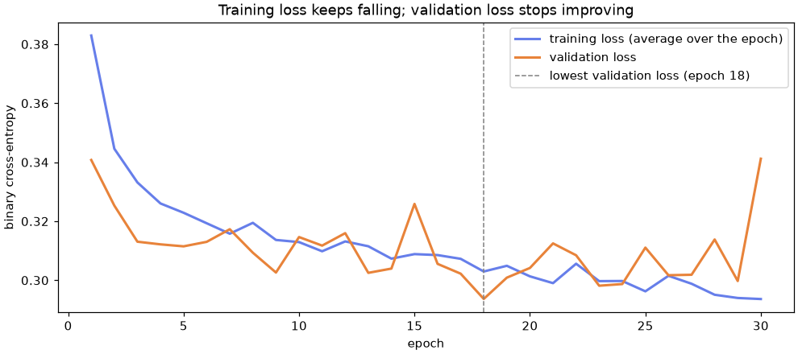

🔥 Lesson 10.2: PyTorch Fundamentals
Rebuild your hand-made network with the tools professionals use: tensors, layers, losses, optimizers and data loaders, wired into a training loop that knows when to stop.
🎯 Learning Objectives
By the end of this lesson, you will be able to:
- Create and reshape tensors, convert between NumPy and PyTorch, and get the
float32dtype right - Define a network with
nn.Linear,nn.Sequentialand your ownnn.Modulesubclass - Choose the loss function that matches the task, and train with an optimizer, a
Datasetand aDataLoader - Write the standard training loop with
model.train(),model.eval(),torch.no_grad(), a validation set and early stopping - Save and reload a trained model with
state_dict, and judge it honestly against gradient boosting
In This Lesson
🧭 From Hand-Made to PyTorch
In Lesson 10.1 you built a network from parts: a dictionary of weight arrays, a forward function, a loss, a backward pass (then autograd), and a loop that nudged every weight. It worked, and it would not survive contact with a real project. Twenty layers, a million images, mini-batches, saving the result: each would mean more hand-written plumbing.
PyTorch is a library of exactly that plumbing, written once and well. It is the most widely used deep learning framework in research and very common in industry, and everything you learned in 10.1 maps onto one of its pieces:
| In Lesson 10.1 you wrote | PyTorch gives you |
|---|---|
| NumPy arrays | torch.Tensor: arrays that track gradients and can live on a GPU |
A dictionary of weights + forward() | nn.Module, with layers such as nn.Linear that create and initialize their own weights |
bce_loss() | Loss objects: nn.BCEWithLogitsLoss, nn.CrossEntropyLoss, nn.MSELoss |
backward() | Autograd: loss.backward() |
The update loop and grad.zero_() | An optimizer: optimizer.step() and optimizer.zero_grad() |
| Full-batch training on arrays | Dataset and DataLoader: shuffled mini-batches |
np.savez | torch.save(model.state_dict()) |
💡 Mental Model: A Workshop with Labeled Drawers
Lesson 10.1 was carving every tool yourself before building a chair. PyTorch is a workshop where each tool sits in its labeled drawer: tensors in one, layers in another, losses, optimizers, data loaders. You still decide what to build and in what order, and you still hold the tools yourself (PyTorch does not hide the training loop from you, unlike some higher-level libraries), but you never carve a chisel again.
The whole lesson builds toward this loop, which every PyTorch project in this course uses, including the image and sequence models in Lessons 10.3 to 10.5:
⚠️ An Honest Word Before You Start
This lesson trains networks on Pinecrest's churn table because it is data you know well, so every new tool has a familiar result to check against. But a table of customer features is not where deep learning shines. On tabular data, gradient-boosted trees are usually as good or better, and much less work. The project measures exactly that. Lessons 10.3 to 10.5 move to images and sequences, where networks are the right tool.
🧊 Tensors
A tensor is PyTorch's array: like a NumPy array, it has a shape and a data type and supports the same kind of arithmetic, slicing and broadcasting. It adds two things: it can record operations for autograd, and it can live on a GPU.
import numpy as np
import pandas as pd
import torch
print(torch.__version__)
t = torch.tensor([[1.0, 2.0, 3.0],
[4.0, 5.0, 6.0]])
print(t)
print(t.shape, t.dtype, t.device)Output
2.14.1+cpu
tensor([[1., 2., 3.],
[4., 5., 6.]])
torch.Size([2, 3]) torch.float32 cpuYour version line may show a different suffix (+cpu means a CPU-only build, which is all this course needs). Three attributes describe every tensor: its shape, its dtype (here float32), and its device (here the CPU). Operations look like NumPy, with dim= where NumPy says axis=:
print(t * 10)
print(t.sum(dim=0)) # column sums
print(t.mean().item()) # .item() turns a one-value tensor into a Python number
print(t @ t.T) # matrix multiplication, as in Lesson 10.1
print(t.reshape(3, 2))
print(t[:, 0].shape, t[:, 0].unsqueeze(1).shape) # unsqueeze adds a dimension of size 1Output
tensor([[10., 20., 30.],
[40., 50., 60.]])
tensor([5., 7., 9.])
3.5
tensor([[14., 32.],
[32., 77.]])
tensor([[1., 2.],
[3., 4.],
[5., 6.]])
torch.Size([2]) torch.Size([2, 1])Keep an eye on unsqueeze(1): it turns a flat vector of 2 values into a column of shape (2, 1). You will need it for targets in a moment.
🔁 NumPy In, NumPy Out, and the dtype Trap
arr = np.array([0.5, 1.5, 2.5])
shared = torch.from_numpy(arr) # shares memory with arr
copied = torch.tensor(arr, dtype=torch.float32)
arr[0] = 99.0
print(shared, shared.dtype)
print(copied, copied.dtype)
print(copied.numpy())Output
tensor([99.0000, 1.5000, 2.5000], dtype=torch.float64) torch.float64
tensor([0.5000, 1.5000, 2.5000]) torch.float32
[0.5 1.5 2.5]Two lessons in one block. First, torch.from_numpy shares memory with the array, so changing arr changed shared; torch.tensor makes an independent copy. Second, and more important: NumPy's default is float64; PyTorch layers use float32. Anything coming from NumPy, pandas or scikit-learn arrives as float64 and must be converted, or the first layer refuses it (mistake 1). Converting with dtype=torch.float32 as you create the tensor is the simplest habit.
📂 The Churn Data as Tensors
Now the real data. Take the ten numeric features from Lessons 1.1 and 10.1, make the course's standard test split, and then split the training part again: 80% to fit the weights and 20% as a validation set for decisions during training (how many epochs, which settings). The test set stays locked until the very end.
from sklearn.model_selection import train_test_split
from sklearn.preprocessing import StandardScaler
customers = pd.read_csv("data/customers_churn.csv")
features = ["tenure_months", "orders_12m", "spend_12m", "avg_order_value", "days_since_last_order",
"returns_12m", "return_rate", "support_tickets_12m", "discount_share", "app_user"]
X_train_df, X_test_df, y_train_s, y_test_s = train_test_split(
customers[features], customers["churned"], test_size=0.25, stratify=customers["churned"], random_state=42
)
X_fit_df, X_val_df, y_fit_s, y_val_s = train_test_split(
X_train_df, y_train_s, test_size=0.2, stratify=y_train_s, random_state=42
)
scaler = StandardScaler().fit(X_fit_df) # fit on the fitting rows only
def to_tensors(X_df, y_s):
X_t = torch.tensor(scaler.transform(X_df), dtype=torch.float32)
y_t = torch.tensor(y_s.to_numpy(), dtype=torch.float32).unsqueeze(1) # shape (n, 1)
return X_t, y_t
X_fit, y_fit = to_tensors(X_fit_df, y_fit_s)
X_val, y_val = to_tensors(X_val_df, y_val_s)
X_test, y_test = to_tensors(X_test_df, y_test_s)
print(X_fit.shape, y_fit.shape, X_val.shape, X_test.shape)
print(X_fit.dtype, y_fit[:5].squeeze(1))Output
torch.Size([3600, 10]) torch.Size([3600, 1]) torch.Size([900, 10]) torch.Size([1500, 10])
torch.float32 tensor([0., 0., 0., 0., 0.])3,600 rows to fit, 900 to validate, 1,500 to test. The targets are float32 too (the binary loss compares floats) and shaped (n, 1) to match the network's single output column.
💡 Devices, in One Paragraph
On a machine with an NVIDIA GPU, device = "cuda" if torch.cuda.is_available() else "cpu", then model.to(device) and xb.to(device) for each batch, moves the work to the GPU. Model and data must be on the same device. This course runs on the CPU throughout: small data, small models, a few epochs. The code you write here runs on a GPU with only those lines added.
🧱 Models as nn.Module
The torch.nn module holds the layers. The workhorse is nn.Linear(in_features, out_features): the X @ W + b of Lesson 10.1, with its weights created and randomly initialized for you.
from torch import nn
torch.manual_seed(42)
layer = nn.Linear(10, 16)
print(layer)
print(layer.weight.shape, layer.bias.shape)
print(layer(X_fit[:3]).shape)Output
Linear(in_features=10, out_features=16, bias=True)
torch.Size([16, 10]) torch.Size([16])
torch.Size([3, 16])One surprise: the weight is stored as (16, 10), outputs by inputs, the transpose of Lesson 10.1's convention. The layer computes x @ weight.T + bias, so the result is still (3, 16). You rarely touch the weight matrix directly; just remember that nn.Linear(10, 16) means "10 in, 16 out".
For a simple stack of layers, nn.Sequential chains them in order. Here is the network from Lesson 10.1, with the same 193 parameters:
torch.manual_seed(42)
seq_model = nn.Sequential(nn.Linear(10, 16), nn.ReLU(), nn.Linear(16, 1))
print(seq_model)
print("parameters:", sum(p.numel() for p in seq_model.parameters()))Output
Sequential(
(0): Linear(in_features=10, out_features=16, bias=True)
(1): ReLU()
(2): Linear(in_features=16, out_features=1, bias=True)
)
parameters: 193🏗️ Your Own Module
Most real models are written as a class that inherits from nn.Module. The pattern has two parts: create the layers in __init__ (so PyTorch registers their parameters), and wire them together in forward. It looks like more code than nn.Sequential, but it lets forward do anything Python can do: branches, several inputs, skip connections.
class ChurnNet(nn.Module):
def __init__(self, n_features, n_hidden=16):
super().__init__() # always call this first
self.hidden = nn.Linear(n_features, n_hidden)
self.output = nn.Linear(n_hidden, 1)
def forward(self, x):
return self.output(torch.relu(self.hidden(x))) # raw scores (logits): no sigmoid here
torch.manual_seed(42)
model = ChurnNet(n_features=10)
for name, param in model.named_parameters():
print(f"{name:14s} {tuple(param.shape)}")
logits = model(X_fit[:4])
print(logits.squeeze(1))
print(torch.sigmoid(logits).squeeze(1))Output
hidden.weight (16, 10)
hidden.bias (16,)
output.weight (1, 16)
output.bias (1,)
tensor([-0.0142, 0.3132, 0.1372, 0.0113], grad_fn=<SqueezeBackward1>)
tensor([0.4965, 0.5777, 0.5343, 0.5028], grad_fn=<SqueezeBackward1>)Three things to notice:
- You call
model(x), nevermodel.forward(x): calling the module runsforwardplus PyTorch's bookkeeping. - The printout ends with
grad_fn=...: autograd is already recording, ready forbackward, exactly like 10.1's tensors withrequires_grad=True. Every parameter of annn.Moduletracks gradients automatically. - The model returns logits, the raw scores before the sigmoid. Applying
torch.sigmoidturns them into probabilities. Why not put the sigmoid inside the model? The next section explains.
💡 Why torch.manual_seed(42)?
A new layer starts from random weights, and a shuffled DataLoader draws a random order of rows. Seeding PyTorch's random generator right before creating a model (and before training) makes a run repeat exactly, so a difference between two runs means your change did something, not that you rolled different dice.
🎯 Loss Functions and Optimizers
The loss must match the task, and so must the last layer. This table covers almost every model you will train:
| Task | Last layer outputs | Loss | Target |
|---|---|---|---|
| Yes or no (churn) | 1 logit | nn.BCEWithLogitsLoss() | float 0.0 or 1.0, shape (n, 1) |
| One of k classes | k logits | nn.CrossEntropyLoss() | integer class index, shape (n,) |
| A number | 1 value | nn.MSELoss() or nn.L1Loss() | float, shape (n, 1) |
BCEWithLogitsLoss is binary cross-entropy (10.1's bce_loss) with the sigmoid built in. Combining them lets PyTorch compute the loss in a numerically safe way, without the np.clip trick, even for extreme scores. So the rule is: the model outputs logits, and the loss applies the sigmoid. Apply the sigmoid yourself only when you want probabilities for reporting. CrossEntropyLoss follows the same rule for many classes, with softmax built in:
ce = nn.CrossEntropyLoss()
class_logits = torch.tensor([[2.0, 0.5, -1.0], # row 1: class 0 looks most likely
[0.1, 0.2, 3.0]]) # row 2: class 2 looks most likely
labels = torch.tensor([0, 2]) # the true classes, as integers
print(f"cross-entropy: {ce(class_logits, labels).item():.4f}")
print(class_logits.softmax(dim=1).round(decimals=3))
print("predicted classes:", class_logits.argmax(dim=1))Output
cross-entropy: 0.1755
tensor([[0.7860, 0.1750, 0.0390],
[0.0490, 0.0540, 0.8960]])
predicted classes: tensor([0, 2])Softmax turns each row of logits into probabilities that sum to 1, and argmax picks the predicted class. The image classifier in Lesson 10.3 has 10 classes and uses exactly this pair.
🚶 Optimizers
An optimizer owns the update step. You hand it the model's parameters and a learning rate once; after that, optimizer.step() updates every parameter from its .grad, and optimizer.zero_grad() resets the gradients (the reset you did by hand in 10.1). Watch one step lower the loss:
loss_fn = nn.BCEWithLogitsLoss()
optimizer = torch.optim.Adam(model.parameters(), lr=0.01)
before = loss_fn(model(X_fit), y_fit)
optimizer.zero_grad() # clear old gradients
before.backward() # compute new ones
optimizer.step() # update every parameter
after = loss_fn(model(X_fit), y_fit)
print(f"loss before one step {before.item():.4f}, after {after.item():.4f}")Output
loss before one step 0.7570, after 0.7288torch.optim.SGD is the plain gradient descent of 10.1 (optionally with momentum). Adam adapts the step size for each parameter from the history of its gradients, and it is the usual default because it works well with little tuning; lr=0.001 to 0.01 is the typical range. Exercise 2 compares the two.
📦 Dataset and DataLoader
Lesson 10.1 used every row in every step. Real training uses mini-batches: shuffle the rows, cut them into batches of, say, 64, and take one optimizer step per batch. Each step is cheaper and noisier, and you get many steps per epoch instead of one; in practice this reaches a good model much faster, and it is the only option when the data does not fit in memory.
PyTorch splits the job in two. A Dataset knows how many samples there are and how to fetch sample number i. A DataLoader wraps a dataset and serves shuffled batches. When your data is already in tensors, TensorDataset is a ready-made dataset:
from torch.utils.data import TensorDataset, DataLoader
fit_set = TensorDataset(X_fit, y_fit)
first_x, first_y = fit_set[0]
print(len(fit_set), first_x.shape, first_y)
torch.manual_seed(42)
fit_loader = DataLoader(fit_set, batch_size=64, shuffle=True)
xb, yb = next(iter(fit_loader))
print(xb.shape, yb.shape, "batches per epoch:", len(fit_loader))Output
3600 torch.Size([10]) tensor([0.])
torch.Size([64, 10]) torch.Size([64, 1]) batches per epoch: 573,600 rows in batches of 64 make 57 batches (the last one has only 16 rows). shuffle=True reshuffles at the start of every epoch, using PyTorch's random generator, which is why the seed comes first. Validation and test data are never shuffled: order does not matter for evaluation.
✍️ Writing Your Own Dataset
When the data needs work per sample (reading an image file, cutting a window out of a time series), you write a Dataset class with three methods. Here is one that builds its tensors straight from a slice of the customer table and a fitted scaler:
from torch.utils.data import Dataset
class ChurnDataset(Dataset):
def __init__(self, frame, scaler):
self.X = torch.tensor(scaler.transform(frame[features]), dtype=torch.float32)
self.y = torch.tensor(frame["churned"].to_numpy(), dtype=torch.float32).unsqueeze(1)
def __len__(self):
return len(self.y)
def __getitem__(self, i):
return self.X[i], self.y[i]
val_dataset = ChurnDataset(customers.loc[X_val_df.index], scaler)
print(len(val_dataset), torch.equal(val_dataset.X, X_val))Output
900 TrueThe same 900 validation rows, the same values. Anything with __len__ and __getitem__ works with DataLoader; torchvision's image datasets in Lessons 10.3 and 10.5 are built exactly this way. torch.utils.data.Subset(dataset, indices) picks some rows of any dataset, which those lessons use to train on a smaller sample.
🔄 The Training Loop
Now assemble the pieces. Two small functions do all the work: one trains for one epoch, one evaluates. Write them once and reuse them; Lesson 10.3 uses the same shape.
from sklearn.metrics import roc_auc_score
def train_one_epoch(model, loader, loss_fn, optimizer):
model.train() # training mode (matters for dropout)
total_loss, n = 0.0, 0
for xb, yb in loader:
optimizer.zero_grad() # 1. reset gradients
loss = loss_fn(model(xb), yb) # 2. forward pass and loss
loss.backward() # 3. backward pass
optimizer.step() # 4. update
total_loss += loss.item() * len(yb)
n += len(yb)
return total_loss / n # average loss over the epoch
def evaluate(model, X, y, loss_fn):
model.eval() # prediction mode
with torch.no_grad(): # no gradient bookkeeping needed
logits = model(X)
loss = loss_fn(logits, y).item()
auc = roc_auc_score(y.squeeze(1).numpy(), logits.squeeze(1).numpy())
return loss, aucThe four numbered lines are 10.1's loop, one batch at a time. The rest is bookkeeping you will see in every PyTorch project:
model.train()andmodel.eval()switch layers that behave differently while training, such as dropout (in the project) and batch normalization. This model has neither yet, but the habit costs nothing and prevents a silent bug later (mistake 4).torch.no_grad()turns off autograd's recording during evaluation: faster, less memory, and the outputs can go straight to NumPy.loss.item()pulls the number out of the tensor. Summingloss.item() * len(yb)gives an honest average even though the last batch is smaller.- ROC AUC works on logits directly: the sigmoid never changes the order of the scores, and AUC only cares about order.
Train a wider version of the network (64 hidden units) for 30 epochs with Adam, and watch both the training loss and the validation loss:
torch.manual_seed(42)
model = ChurnNet(n_features=10, n_hidden=64)
optimizer = torch.optim.Adam(model.parameters(), lr=0.01)
fit_loader = DataLoader(fit_set, batch_size=64, shuffle=True)
history = []
for epoch in range(1, 31):
train_loss = train_one_epoch(model, fit_loader, loss_fn, optimizer)
val_loss, val_auc = evaluate(model, X_val, y_val, loss_fn)
history.append({"epoch": epoch, "train": train_loss, "validation": val_loss, "val_auc": val_auc})
if epoch % 5 == 0:
print(f"epoch {epoch:2d} train loss {train_loss:.3f} val loss {val_loss:.3f} val AUC {val_auc:.3f}")Output (yours may vary slightly)
epoch 5 train loss 0.323 val loss 0.311 val AUC 0.862
epoch 10 train loss 0.313 val loss 0.315 val AUC 0.869
epoch 15 train loss 0.309 val loss 0.326 val AUC 0.848
epoch 20 train loss 0.301 val loss 0.304 val AUC 0.870
epoch 25 train loss 0.296 val loss 0.311 val AUC 0.863
epoch 30 train loss 0.294 val loss 0.341 val AUC 0.841Training output in this module is labeled "may vary": with the same seed and the same number of CPU threads, PyTorch repeats a run exactly, but a different processor or library build can change the last digits. Compare trends, not the third decimal. Plot the two curves:
import matplotlib.pyplot as plt
curves = pd.DataFrame(history).set_index("epoch")
fig, ax = plt.subplots(figsize=(9, 4), layout="constrained")
ax.plot(curves.index, curves["train"], color="#667eea", linewidth=2, label="training loss (average over the epoch)")
ax.plot(curves.index, curves["validation"], color="#e8833a", linewidth=2, label="validation loss")
best_epoch = curves["validation"].idxmin()
ax.axvline(best_epoch, color="gray", linestyle="--", linewidth=1, label=f"lowest validation loss (epoch {best_epoch})")
ax.set_xlabel("epoch")
ax.set_ylabel("binary cross-entropy")
ax.set_title("Training loss keeps falling; validation loss stops improving")
ax.legend()
plt.show()
⏱️ Validation and Early Stopping
How many epochs should you train? Too few and the network underfits; too many and it starts memorizing the fitting rows, which the validation curve reveals as it flattens or rises while the training curve keeps falling. Early stopping automates the decision: after every epoch, check the validation loss; whenever it is the best so far, save a copy of the weights; if it has not improved for patience epochs, stop and restore the best copy.
The weights live in the model's state_dict(), a dictionary from parameter names to tensors. copy.deepcopy takes a snapshot that later training cannot change:
import copy
def fit(model, train_loader, X_val, y_val, loss_fn, optimizer, max_epochs=50, patience=5):
best_loss, best_state, best_epoch = float("inf"), None, 0
for epoch in range(1, max_epochs + 1):
train_one_epoch(model, train_loader, loss_fn, optimizer)
val_loss, val_auc = evaluate(model, X_val, y_val, loss_fn)
if val_loss < best_loss:
best_loss, best_epoch = val_loss, epoch
best_state = copy.deepcopy(model.state_dict())
elif epoch - best_epoch >= patience:
break
model.load_state_dict(best_state) # roll back to the best epoch
print(f"stopped after epoch {epoch}; best epoch {best_epoch}, validation loss {best_loss:.4f}")
return model
torch.manual_seed(42)
model = ChurnNet(n_features=10, n_hidden=64)
optimizer = torch.optim.Adam(model.parameters(), lr=0.01)
fit_loader = DataLoader(fit_set, batch_size=64, shuffle=True)
model = fit(model, fit_loader, X_val, y_val, loss_fn, optimizer)
print(f"validation AUC of the restored model: {evaluate(model, X_val, y_val, loss_fn)[1]:.3f}")Output (yours may vary slightly)
stopped after epoch 23; best epoch 18, validation loss 0.2937
validation AUC of the restored model: 0.881⚠️ The Validation Set Is Now "Used"
Early stopping chose the epoch by looking at the validation rows, so the validation AUC is slightly optimistic: the model was picked because it did well there. That is exactly why the test set exists. Report the test score once, at the end, as the project does. The same logic as cross-validation and tuning in Lessons 1.3 and 6.2, applied to epochs.
Professional training libraries (PyTorch Lightning, for example) wrap this loop, early stopping and checkpointing included, into a Trainer object. They save typing; they do nothing you cannot now write and read yourself.
💾 Saving and Loading
The recommended way to save a PyTorch model is to save its state_dict (the weights), not the model object. To load, you create a fresh model from your class and pour the weights into it:
torch.save(model.state_dict(), "churn_net.pt")
state = torch.load("churn_net.pt", weights_only=True)
print(list(state.keys()))
reloaded = ChurnNet(n_features=10, n_hidden=64) # same architecture as the saved model
reloaded.load_state_dict(state)
reloaded.eval()
model.eval()
with torch.no_grad():
print("same test predictions:", torch.equal(model(X_test), reloaded(X_test)))Output
['hidden.weight', 'hidden.bias', 'output.weight', 'output.bias']
same test predictions: Trueload_state_dict checks that every name and shape lines up and raises an error if not (mistake 6); when it is the last line of a notebook cell, you see its report, <All keys matched successfully>. Two practical consequences of saving weights rather than objects:
- The class definition is part of your model. Keep
ChurnNetin a.pyfile next to the weights, with the settings (n_hidden=64) you used. - The preprocessing is part of your model too. The network only understands features scaled with the fitting rows' statistics, so the fitted
scalermust be saved alongside (the project does it withjoblib; Lesson 12.1 covers safe formats).
🛑 Only Load Files You Trust
torch.load can unpickle arbitrary Python objects, and unpickling can run code. weights_only=True (the default in current PyTorch, written out here so the intent is clear) restricts loading to tensors and simple containers. Never turn it off for a file from a source you do not trust.
⚠️ Common Mistakes
Most PyTorch errors are about dtypes and shapes, and the messages say exactly which. The silent ones are about modes and losses.
1. Feeding float64 Data to a float32 Model
raw = torch.from_numpy(scaler.transform(X_val_df)) # float64, straight from NumPy
model(raw)Error
RuntimeError: mat1 and mat2 must have the same dtype, but got Double and FloatWhat it means: "Double" is float64, "Float" is float32. The data came from scikit-learn in NumPy's default precision; the layer's weights are float32. Fix: create tensors with torch.tensor(array, dtype=torch.float32), or convert with .float().
2. The Wrong Number of Features
model(X_val[:, :9]) # one column shortError
RuntimeError: mat1 and mat2 shapes cannot be multiplied (900x9 and 10x64)What it means: the batch is 900 rows by 9 columns, and the first layer expects 10 inputs (its weight, transposed for the multiplication, is 10 × 64). Fix: make n_features come from the data (X.shape[1]) rather than a typed number, and check that the same columns, in the same order, reach the model at training and prediction time.
3. Target Shape Does Not Match the Output
flat_targets = y_val.squeeze(1) # shape (900,)
loss_fn(model(X_val), flat_targets) # model output is (900, 1)Error
ValueError: Target size (torch.Size([900])) must be the same as input size (torch.Size([900, 1]))What it means: BCEWithLogitsLoss compares outputs and targets element by element and insists on identical shapes. Fix: shape the targets (n, 1) with unsqueeze(1), as to_tensors does, or squeeze the output. (CrossEntropyLoss is the exception: logits (n, k) and integer targets (n,).)
4. Forgetting model.eval() When the Model Has Dropout
torch.manual_seed(42)
dropout_net = nn.Sequential(nn.Linear(10, 32), nn.ReLU(), nn.Dropout(0.5), nn.Linear(32, 1))
one_customer = X_test[:1]
dropout_net.train()
with torch.no_grad():
print("train mode:", [round(dropout_net(one_customer).item(), 3) for _ in range(3)])
dropout_net.eval()
with torch.no_grad():
print("eval mode: ", [round(dropout_net(one_customer).item(), 3) for _ in range(3)])Output (no error, and that is the problem)
train mode: [0.367, 0.958, -0.361]
eval mode: [0.348, 0.348, 0.348]What happened: in training mode, dropout switches off a random half of the hidden units on every call, so the same customer gets a different score each time. In evaluation mode, every unit is used and the answer is stable. torch.no_grad() does not switch modes: it only stops gradient tracking. Fix: call model.eval() before evaluating or predicting, and model.train() before training again (the loop functions do both).
5. A Sigmoid in the Model and in the Loss
sure_churner = torch.tensor([[1.0]])
for name, output in [("logit 8.0 (correct)", torch.tensor([[8.0]])),
("sigmoid(8.0) passed as a logit", torch.sigmoid(torch.tensor([[8.0]])))]:
print(f"{name:32s} loss {loss_fn(output, sure_churner).item():.4f}")Output (no error, and that is the problem)
logit 8.0 (correct) loss 0.0003
sigmoid(8.0) passed as a logit loss 0.3134What happened: the model is confidently right (logit 8 means a probability of 0.9997), and the loss is near 0, as it should be. If the model already applies a sigmoid, the loss applies a second one: the most confident possible output, 1.0, then reads as a probability of only 0.73, so the loss can never fall below 0.31 and training pushes in strange directions. Nothing crashes. Fix: no sigmoid at the end of the model when you use BCEWithLogitsLoss (or softmax with CrossEntropyLoss); apply it only to report probabilities.
6. Loading Weights into a Different Architecture
ChurnNet(n_features=10, n_hidden=16).load_state_dict(torch.load("churn_net.pt", weights_only=True))Error
RuntimeError: Error(s) in loading state_dict for ChurnNet:
size mismatch for hidden.weight: copying a param with shape torch.Size([64, 10]) from checkpoint, the shape in current model is torch.Size([16, 10]).
size mismatch for hidden.bias: copying a param with shape torch.Size([64]) from checkpoint, the shape in current model is torch.Size([16]).
size mismatch for output.weight: copying a param with shape torch.Size([1, 64]) from checkpoint, the shape in current model is torch.Size([1, 16]).What it means: the file holds weights for a 64-unit hidden layer, and the new model has 16 units, so the shapes do not fit. Fix: recreate the model with exactly the settings it was trained with. Saving those settings next to the weights (in a small JSON file, or in the same dictionary you pass to torch.save) avoids the guesswork.
🛠️ Project: A PyTorch Churn Model
The lesson used ten numeric features. Now give a network everything usable in the churn table: all eleven numeric columns (including email_opens_90d, which has gaps) and the five categorical ones, prepared with the ColumnTransformer from Lesson 2.2. Then train with dropout and early stopping, test once, compare honestly with logistic regression and gradient boosting, and save everything needed to use the model later. Start a fresh notebook, lesson_10_2_project; the code is self-contained apart from train_one_epoch, evaluate and fit, which you copy from the lesson. Allow about 45 minutes.
🛠️ Step 1: Load and split three ways (5 min)
Leave out customer_id, signup_date (it duplicates tenure) and, above all, cancellation_reason, the leak from Lesson 1.2. Split off the standard test set, then a validation set for early stopping.
import pandas as pd
import torch
from torch import nn
from torch.utils.data import TensorDataset, DataLoader
from sklearn.model_selection import train_test_split
customers = pd.read_csv("data/customers_churn.csv")
numeric = ["tenure_months", "orders_12m", "spend_12m", "avg_order_value", "days_since_last_order", "returns_12m",
"return_rate", "support_tickets_12m", "discount_share", "app_user", "email_opens_90d"]
categorical = ["home_store", "region", "age_group", "loyalty_tier", "preferred_category"]
X_all, y_all = customers[numeric + categorical], customers["churned"]
X_train_df, X_test_df, y_train_s, y_test_s = train_test_split(
X_all, y_all, test_size=0.25, stratify=y_all, random_state=42)
X_fit_df, X_val_df, y_fit_s, y_val_s = train_test_split(
X_train_df, y_train_s, test_size=0.2, stratify=y_train_s, random_state=42)
print(len(X_fit_df), len(X_val_df), len(X_test_df))Output
3600 900 1500🛠️ Step 2: Preprocess, fitted on the fitting rows only (10 min)
Networks need every input numeric, scaled and free of gaps. Impute and scale the numbers; impute and one-hot encode the categories. sparse_output=False gives a dense array that converts straight to a tensor.
from sklearn.compose import ColumnTransformer
from sklearn.impute import SimpleImputer
from sklearn.pipeline import make_pipeline
from sklearn.preprocessing import OneHotEncoder, StandardScaler
preprocess = ColumnTransformer([
("num", make_pipeline(SimpleImputer(strategy="median"), StandardScaler()), numeric),
("cat", make_pipeline(SimpleImputer(strategy="most_frequent"),
OneHotEncoder(sparse_output=False, handle_unknown="ignore")), categorical),
])
A_fit = preprocess.fit_transform(X_fit_df)
A_val, A_test = preprocess.transform(X_val_df), preprocess.transform(X_test_df)
def as_tensors(A, y_s):
return torch.tensor(A, dtype=torch.float32), torch.tensor(y_s.to_numpy(), dtype=torch.float32).unsqueeze(1)
X_fit, y_fit = as_tensors(A_fit, y_fit_s)
X_val, y_val = as_tensors(A_val, y_val_s)
X_test, y_test = as_tensors(A_test, y_test_s)
print(X_fit.shape, X_val.shape, X_test.shape)Output
torch.Size([3600, 40]) torch.Size([900, 40]) torch.Size([1500, 40])Sixteen columns became 40: eleven numeric plus 29 one-hot columns. The model's input size comes from X_fit.shape[1], never typed by hand.
🛠️ Step 3: A model with dropout (5 min)
Dropout randomly zeroes a share of the hidden units on each training step, so the network cannot lean on any single unit: a cheap, effective guard against overfitting. It is active only in train() mode.
class ChurnMLP(nn.Module):
def __init__(self, n_features, n_hidden=32, dropout=0.2):
super().__init__()
self.net = nn.Sequential(
nn.Linear(n_features, n_hidden), nn.ReLU(), nn.Dropout(dropout),
nn.Linear(n_hidden, 1),
)
def forward(self, x):
return self.net(x)
settings = {"n_features": X_fit.shape[1], "n_hidden": 32, "dropout": 0.2}
torch.manual_seed(42)
churn_mlp = ChurnMLP(**settings)
print(churn_mlp)
print("parameters:", sum(p.numel() for p in churn_mlp.parameters()))Output
ChurnMLP(
(net): Sequential(
(0): Linear(in_features=40, out_features=32, bias=True)
(1): ReLU()
(2): Dropout(p=0.2, inplace=False)
(3): Linear(in_features=32, out_features=1, bias=True)
)
)
parameters: 1345🛠️ Step 4: Train with early stopping (10 min)
Use the lesson's fit function: Adam with a learning rate of 0.003, batches of 64, up to 30 epochs, patience 5. Expect well under a minute on a laptop.
loss_fn = nn.BCEWithLogitsLoss()
optimizer = torch.optim.Adam(churn_mlp.parameters(), lr=0.003)
torch.manual_seed(42)
loader = DataLoader(TensorDataset(X_fit, y_fit), batch_size=64, shuffle=True)
churn_mlp = fit(churn_mlp, loader, X_val, y_val, loss_fn, optimizer, max_epochs=30, patience=5)Output (yours may vary slightly)
stopped after epoch 22; best epoch 17, validation loss 0.3138🛠️ Step 5: Open the test set once, and compare honestly (10 min)
Score the network on the test set. For a fair comparison, train logistic regression and gradient boosting on the same 3,600 fitting rows and the same prepared features (boosting would also accept the raw categories; Lesson 5.3).
from sklearn.dummy import DummyClassifier
from sklearn.ensemble import HistGradientBoostingClassifier
from sklearn.linear_model import LogisticRegression
from sklearn.metrics import roc_auc_score
net_auc = evaluate(churn_mlp, X_test, y_test, loss_fn)[1]
scores = {"neural network (PyTorch)": net_auc}
for name, clf in [("baseline", DummyClassifier(strategy="most_frequent")),
("logistic regression", LogisticRegression(max_iter=1000)),
("gradient boosting", HistGradientBoostingClassifier(random_state=42))]:
clf.fit(A_fit, y_fit_s)
scores[name] = roc_auc_score(y_test_s, clf.predict_proba(A_test)[:, 1])
for name, auc in sorted(scores.items(), key=lambda item: item[1]):
print(f"{name:26s} test ROC AUC {auc:.3f}")Output (yours may vary slightly)
baseline test ROC AUC 0.500
logistic regression test ROC AUC 0.826
neural network (PyTorch) test ROC AUC 0.846
gradient boosting test ROC AUC 0.850Read this the way a careful analyst would. The network clearly beats the baseline and logistic regression, because the churn effects are partly nonlinear. Gradient boosting edges it out, and a gap of 0.004 is within the wobble of a single test set, so call it a tie on accuracy. The tie-breaker is everything else: boosting got there with default settings, while the network needed scaling, an architecture, a learning rate, dropout and early stopping, each of them a choice that could have gone wrong. That is the usual picture on tabular data, and the honest recommendation for Pinecrest's churn model is gradient boosting. The value of this project is the workflow, which carries over unchanged to images and sequences, where networks do win.
🛠️ Step 6: Save the model, its settings and its preprocessing (5 min)
A model someone else can use needs three things: the weights, the settings to rebuild the class, and the fitted preprocessing. Save all three, rebuild from disk, and check the predictions match.
import joblib
torch.save({"settings": settings, "state_dict": churn_mlp.state_dict()}, "churn_mlp.pt")
joblib.dump(preprocess, "churn_preprocess.joblib")
checkpoint = torch.load("churn_mlp.pt", weights_only=True)
restored = ChurnMLP(**checkpoint["settings"])
restored.load_state_dict(checkpoint["state_dict"])
restored.eval()
restored_prep = joblib.load("churn_preprocess.joblib")
new_rows = X_test_df.head(3)
with torch.no_grad():
probs = torch.sigmoid(restored(torch.tensor(restored_prep.transform(new_rows), dtype=torch.float32)))
print(checkpoint["settings"])
print(pd.DataFrame({"churn_probability": probs.squeeze(1).numpy().round(3), "churned": y_test_s.head(3).to_numpy()},
index=new_rows.index))Output (yours may vary slightly)
{'n_features': 40, 'n_hidden': 32, 'dropout': 0.2}
churn_probability churned
2111 0.081 0
3062 0.357 1
1158 0.126 0From three files, raw customer rows go in and churn probabilities come out. Lesson 12.1 packages this properly (and explains why loading a joblib file, like any pickle, must be limited to files you trust); Lesson 12.2 serves it behind an API.
✅ Project Completion Checklist
cancellation_reason,customer_idandsignup_dateare not among the features- The preprocessing was fitted on the 3,600 fitting rows only, and the tensors are
float32 - Early stopping chose the epoch using the validation set; the test set was scored once
- You compared the network with a baseline, logistic regression and gradient boosting on the same rows
churn_mlp.pt(settings and weights) andchurn_preprocess.joblibrebuild a working model- You can explain in two sentences which model you would recommend for churn, and why
🏋️ Hands-on Exercises
These continue in the project notebook, so customers, X_fit, X_val, loss_fn, train_one_epoch, evaluate and fit exist.
🏋️ Exercise 1: Tensor Warm-Up
Make a float32 tensor from the spend_12m and orders_12m columns of customers (shape (6000, 2)). Print its column means. Then compute spend divided by orders for every customer with tensor arithmetic and check with torch.allclose(..., atol=0.01) that it equals the avg_order_value column.
💡 Hint
torch.tensor(customers[["spend_12m", "orders_12m"]].to_numpy(), dtype=torch.float32); then pair[:, 0] / pair[:, 1].
✅ Solution
pair = torch.tensor(customers[["spend_12m", "orders_12m"]].to_numpy(), dtype=torch.float32)
print(pair.shape, pair.mean(dim=0))
aov = pair[:, 0] / pair[:, 1]
recorded = torch.tensor(customers["avg_order_value"].to_numpy(), dtype=torch.float32)
print(torch.allclose(aov, recorded, atol=0.01))Output
torch.Size([6000, 2]) tensor([598.2503, 5.0113])
TrueThe means match the data dictionary (spend about $598, about 5 orders). The check confirms what Lesson 2.4 found: avg_order_value is exactly spend divided by orders, rounded to the cent, so it adds no information. atol=0.01 allows for that rounding.
🏋️ Exercise 2: SGD Versus Adam
Train two copies of ChurnMLP(**settings) for 10 epochs each (no early stopping: call train_one_epoch in a loop), one with torch.optim.SGD(..., lr=0.01) and one with torch.optim.Adam(..., lr=0.003). Seed with torch.manual_seed(42) before creating each model and its loader. Print the validation loss and AUC after epochs 1, 5 and 10.
💡 Hint
Loop over a list of (name, optimizer_class, lr) tuples and create the optimizer with optimizer_class(model.parameters(), lr=lr).
✅ Solution
for opt_name, opt_class, lr in [("SGD", torch.optim.SGD, 0.01), ("Adam", torch.optim.Adam, 0.003)]:
torch.manual_seed(42)
net = ChurnMLP(**settings)
opt = opt_class(net.parameters(), lr=lr)
ex_loader = DataLoader(TensorDataset(X_fit, y_fit), batch_size=64, shuffle=True)
for epoch in range(1, 11):
train_one_epoch(net, ex_loader, loss_fn, opt)
if epoch in (1, 5, 10):
v_loss, v_auc = evaluate(net, X_val, y_val, loss_fn)
print(f"{opt_name:4s} epoch {epoch:2d} val loss {v_loss:.3f} val AUC {v_auc:.3f}")Output (yours may vary slightly)
SGD epoch 1 val loss 0.584 val AUC 0.582
SGD epoch 5 val loss 0.436 val AUC 0.737
SGD epoch 10 val loss 0.392 val AUC 0.795
Adam epoch 1 val loss 0.360 val AUC 0.818
Adam epoch 5 val loss 0.327 val AUC 0.850
Adam epoch 10 val loss 0.317 val AUC 0.861Plain SGD at this learning rate crawls: after ten epochs its validation loss (0.392) is still worse than Adam's after a single epoch (0.360). Adam adapts each parameter's step size from the history of its gradients, so it moves fast without hand-tuning. SGD can catch up with a larger learning rate, momentum and patience; Adam's advantage is that it needs less tuning, which is why it is the common default.
🏋️ Exercise 3: Three Classes with CrossEntropyLoss
Predict loyalty_tier (Basic, Silver, Gold) from the project's prepared features, minus the tier itself. Map the tiers to integers 0, 1, 2 (torch.long), build a network with 3 outputs, train with nn.CrossEntropyLoss and Adam (lr 0.003) for 15 epochs, and report validation accuracy against the "always Basic" baseline. Tip: the one-hot tier columns sit in preprocess.get_feature_names_out(); drop them with a boolean mask.
💡 Hint
Targets for CrossEntropyLoss are a flat tensor of class indices, shape (n,), dtype torch.long. Predictions are logits.argmax(dim=1). Write the loop inline, since evaluate computes AUC for one output.
✅ Solution
tiers = {"Basic": 0, "Silver": 1, "Gold": 2}
keep = ~pd.Series(preprocess.get_feature_names_out()).str.contains("loyalty_tier").to_numpy()
Xt_fit, Xt_val = X_fit[:, keep], X_val[:, keep]
yt_fit = torch.tensor(X_fit_df["loyalty_tier"].map(tiers).to_numpy(), dtype=torch.long)
yt_val = torch.tensor(X_val_df["loyalty_tier"].map(tiers).to_numpy(), dtype=torch.long)
torch.manual_seed(42)
tier_net = nn.Sequential(nn.Linear(Xt_fit.shape[1], 32), nn.ReLU(), nn.Linear(32, 3))
tier_opt = torch.optim.Adam(tier_net.parameters(), lr=0.003)
tier_loss = nn.CrossEntropyLoss()
tier_loader = DataLoader(TensorDataset(Xt_fit, yt_fit), batch_size=64, shuffle=True)
for epoch in range(15):
tier_net.train()
for xb, yb in tier_loader:
tier_opt.zero_grad()
tier_loss(tier_net(xb), yb).backward()
tier_opt.step()
tier_net.eval()
with torch.no_grad():
val_pred = tier_net(Xt_val).argmax(dim=1)
print(f"validation accuracy {(val_pred == yt_val).float().mean().item():.3f}")
print(f"always 'Basic' {(yt_val == 0).float().mean().item():.3f}")Output (yours may vary slightly)
validation accuracy 0.898
always 'Basic' 0.482Far better than the baseline, and for a simple reason: the tier is calculated from spend and tenure, both among the features, so the network only has to rediscover the rule. Most of its mistakes are customers sitting right at a tier boundary; more epochs would shrink them. The mechanics are what transfer: k output logits, integer targets, CrossEntropyLoss, and argmax for the prediction. Lesson 10.3 uses exactly this with 10 clothing classes.
🏋️ Exercise 4: A Regression Network for Weekly Demand (Stretch)
Load data/weekly_demand.csv. Train on 2024 and test on 2025. Features: one-hot product_id and store, plus scaled discount_pct, promo, holiday_week, avg_high_temp_f and week_of_year. Predict log1p(units_sold) with a network (64 hidden units, nn.MSELoss, Adam lr 0.003, batch 128, 20 epochs), convert predictions back with expm1, and report the test MAE in units. Compare with HistGradientBoostingRegressor(random_state=42) on the same prepared features and target.
💡 Hint
The only changes from classification: one output with no activation, nn.MSELoss(), float targets of shape (n, 1). Use np.log1p on the target and np.expm1 on predictions. Seed before creating the model and the loader.
✅ Solution
import numpy as np
from sklearn.ensemble import HistGradientBoostingRegressor
from sklearn.metrics import mean_absolute_error
demand = pd.read_csv("data/weekly_demand.csv")
d_train, d_test = demand[demand["year"] == 2024], demand[demand["year"] == 2025]
d_prep = ColumnTransformer([
("cat", OneHotEncoder(sparse_output=False, handle_unknown="ignore"), ["product_id", "store"]),
("num", StandardScaler(), ["discount_pct", "promo", "holiday_week", "avg_high_temp_f", "week_of_year"]),
])
D_train, D_test = d_prep.fit_transform(d_train), d_prep.transform(d_test)
t_train = np.log1p(d_train["units_sold"].to_numpy())
torch.manual_seed(42)
demand_net = nn.Sequential(nn.Linear(D_train.shape[1], 64), nn.ReLU(), nn.Linear(64, 1))
d_opt = torch.optim.Adam(demand_net.parameters(), lr=0.003)
mse = nn.MSELoss()
d_loader = DataLoader(TensorDataset(torch.tensor(D_train, dtype=torch.float32),
torch.tensor(t_train, dtype=torch.float32).unsqueeze(1)),
batch_size=128, shuffle=True)
for epoch in range(20):
train_one_epoch(demand_net, d_loader, mse, d_opt)
demand_net.eval()
with torch.no_grad():
net_units = np.expm1(demand_net(torch.tensor(D_test, dtype=torch.float32)).squeeze(1).numpy())
hgb_units = np.expm1(HistGradientBoostingRegressor(random_state=42).fit(D_train, t_train).predict(D_test))
print(f"network test MAE {mean_absolute_error(d_test['units_sold'], net_units):.2f} units")
print(f"gradient boosting test MAE {mean_absolute_error(d_test['units_sold'], hgb_units):.2f} units")Output (yours may vary slightly)
network test MAE 8.09 units
gradient boosting test MAE 8.36 unitsThis time the network wins, narrowly: 8.09 units against 8.36. With one-hot product and store columns it learns a demand level for every product and store plus shared effects for promotions and holidays, which suits this data well, and boosting here runs on untuned defaults. Neither result is a law: tabular data usually favors boosting, but not always, which is exactly why you measure instead of assuming. Note also that regression in PyTorch is the classification loop with a different last layer and loss, nothing more.
🎯 Quick Quiz
🎯 Check Your Understanding
Question 1: What does this print?
quiz_array = np.array([1.0, 2.0])
quiz_tensor = torch.from_numpy(quiz_array)
print(quiz_tensor.dtype)Question 2: Which order of lines inside the batch loop is correct?
Question 3: Your churn model ends with nn.Linear(32, 1) and you train it with nn.BCEWithLogitsLoss(). How do you get churn probabilities for a report?
Question 4: A model with dropout gives a slightly different churn probability for the same customer every time you call it inside with torch.no_grad():. Why?
Question 5: Early stopping picked epoch 12 because its validation loss was lowest. Which number should you report as the model's expected performance on new customers?
❓ Common Questions at This Stage
Why PyTorch and not TensorFlow or Keras?
Both are mature and capable. This course uses PyTorch because its code reads like ordinary Python (you write the training loop yourself, so nothing is hidden), it dominates research and is widely used in industry, and the skills transfer: tensors, layers, losses, optimizers and the training loop exist under similar names in every framework. Keras 3 can even run on top of PyTorch.
How do I choose the batch size and learning rate?
Start with common defaults: batch size 32 to 256, Adam with a learning rate of 0.001 to 0.003. If the loss is noisy or explodes, lower the learning rate; if it crawls, raise it. Larger batches give smoother but fewer steps per epoch and often tolerate a larger learning rate. Then treat both as hyperparameters and compare settings on the validation set, never the test set (Lesson 6.2's tools apply).
Why are my numbers slightly different from the page?
PyTorch training is repeatable on one machine with a fixed seed and thread count, but different processors, operating systems and library builds can round differently in the last digits, and those tiny differences grow over many steps. If your loss and AUC are close and the trends match, all is well. Very different numbers usually mean a missing seed or a different split.
When should I use a neural network instead of gradient boosting?
When the input has structure a network can exploit: images (Lessons 10.3 and 10.5), sequences and time series (10.4), text and audio, or when you need to combine such data with a table. For an ordinary table of features, start with gradient boosting; try a network only if you have a lot of data and time to tune, and keep it if it beats boosting on the validation set. Many tabular projects end up using both in an ensemble (Lesson 5.4).
🌟 Going Further: Bonus Challenge
Pinecrest's churners are only 16.5% of customers. BCEWithLogitsLoss(pos_weight=torch.tensor([w])) makes mistakes on churners count w times as much, like class_weight in Lesson 2.5. Retrain the project model with w = 5.0 (about the ratio of stayers to churners). Does the test AUC change? Does the share of customers with a probability above 0.5 change? Explain why weighting moves the probabilities much more than the ranking, and what that means for a team that uses a 0.5 cut-off.
📓 Learning Journal
Take five minutes to write in your learning journal (the journal.md file you started in Lesson 0.1, or a paper notebook). Jot down:
- Key concepts you learned today
- Techniques that clicked (and the ones that have not, yet)
- Questions or confusion to come back to
- Ideas to try on your own
- Progress and feelings: how did this lesson go for you?
✍️ This lesson's prompt: For each line of the training loop (zero_grad, forward, loss, backward, step), write which part of your Lesson 10.1 code it replaces. Then write the recommendation you would give Pinecrest about the churn model, with the two test AUCs that support it.
📝 Lesson Summary
🎓 Key Takeaways
- Tensors are arrays with a shape, a dtype and a device; models use
float32, so convert NumPy'sfloat64 nn.Moduleclasses create layers in__init__and wire them inforward; callmodel(x)- Output logits and let the loss apply the sigmoid or softmax:
BCEWithLogitsLoss,CrossEntropyLoss;MSELossfor numbers - The loop:
zero_grad, forward, loss,backward,step, over mini-batches from aDataLoader model.train()/model.eval()switch dropout;torch.no_grad()switches off gradient tracking; they are different things- A validation set decides when to stop (early stopping restores the best
state_dict); the test set is scored once - Save
state_dictplus the settings and the preprocessing; load withweights_only=True - On tabular data like churn, a network beats logistic regression but gradient boosting is usually the better choice
🏆 What You've Accomplished
- You translated your hand-made network into idiomatic PyTorch, piece by piece
- You wrote reusable training, evaluation and early-stopping functions
- You trained a churn network on every usable feature and compared it fairly with three other models
- You saved a model so that someone else can rebuild it from three files
- You met six PyTorch mistakes, three loud and three silent, and know the fix for each
🔭 Looking Ahead
In Lesson 10.3: Convolutional Neural Networks the data finally plays to a network's strengths: photos of clothing from Fashion-MNIST. You will reuse today's loop unchanged, swap dense layers for convolutional ones that look at small patches of an image, and watch the architecture, not the training code, make the difference.
📋 Before the Next Lesson
- Save
train_one_epoch,evaluateandfitin a file such astraining.py; you will reuse the pattern. - Lesson 10.3 uses Fashion-MNIST, which is already in
data/if you ran Lesson 9.3 (otherwise about 26 MB downloads the first time). Runfrom torchvision import datasetsnow to check torchvision is installed. - Change the project's
n_hiddento 8 and to 128. Which validation loss is lowest? Keep the test set closed while you decide.
🌱 Encouragement for the Journey
You now write PyTorch the way practitioners do, and you understand every line, because you built each piece by hand first. Just as valuable, you did not let a new, impressive tool talk you into a worse model: you measured it against a strong baseline and told the truth about the result. That judgment is rarer than PyTorch skills. Next up: data where networks really shine.